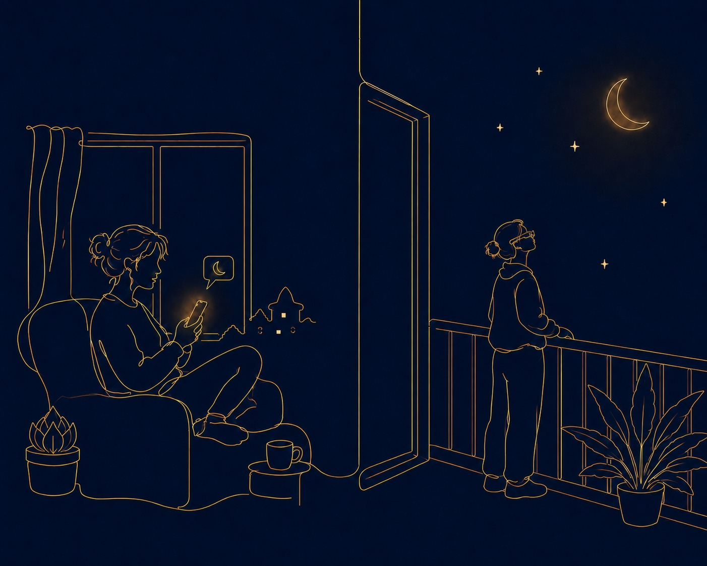
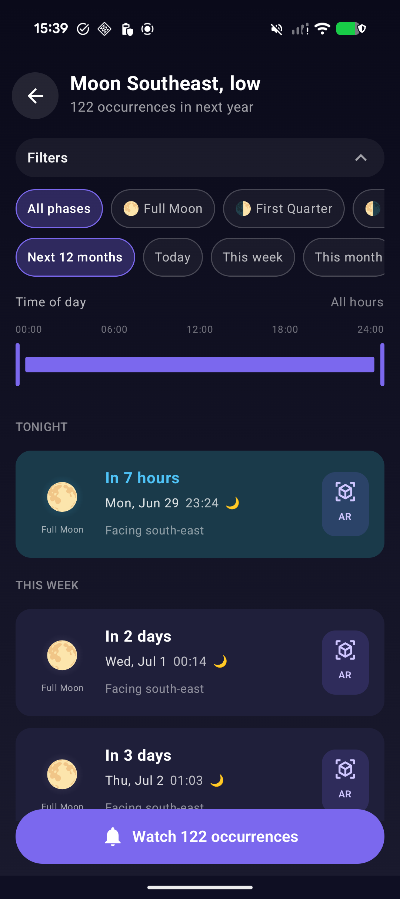
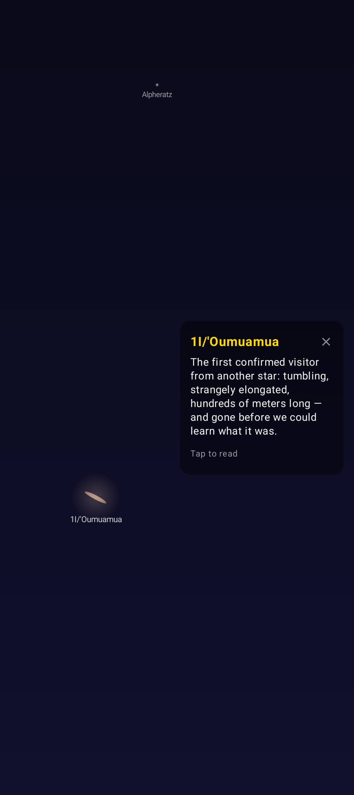

The MoonCompass project brings the quiet pleasure of watching the sky to ordinary people: those who have no wish to become astronomers, charting stars and keeping cold vigil at a telescope, yet would gladly pause to look up at the night.
Expected release: end of summer 2026.
“When I heard the learn’d astronomer…
Look’d up in perfect silence at the stars.” — Walt Whitman

What it does
No jargon, no setup, no telescope. MoonCompass is a window you hold in your hand: hands-free, sensor-driven, and tuned for the moments worth stopping for.
✦ A note on what you’re seeing. Everything below is real and already running — but several of these features are still in active design. The interface and the artwork will be refined and grow more polished before release; the captures here are a work in progress, not the finished look.
Aim at a place in your own surroundings — your window, your balcony, the gap between two rooftops — and MoonCompass traces the moon’s upcoming path right across it, so you can see exactly how and when it will pass. Pick the moment you’d love to witness, and save it. ✦ Coming to XR glasses: the same path, laid over your real surroundings and read at a glance — hands-free.
Save a moon pass and MoonCompass reminds you the instant it’s due along the path you mapped — so the moment you planned for never slips by. Contemplation, scheduled.
Raise the phone and the planets, the moon, even passing comets resolve out of the dark with a tap-to-read note — the sky, captioned. It’s here today, with the full app UI. ✦ Coming to XR glasses: the names on the real sky, no screen to hold — ask aloud what you’re seeing, or reach out and zoom a planet close. Hands free, eyes up.
Find where the sun will break the horizon, or where it will set, ahead of time — so you can stand in the right place at the right minute and simply watch.

A plain list of upcoming moon passes for the spot you chose. Tap one to be reminded the moment it becomes visible along your saved sky path — no charts, no math, just “step outside now.”
Wonder, on demand
Zoom into Halley where it drifts near aphelion, then sweep across to a waning gibbous moon — the whole sky, to scale, rendered live. The famous objects of the night become things you can simply find.
ʻOumuamua — the first interstellar object ever seen crossing our solar system — placed in the sky exactly where it belongs. The catalogue isn’t limited to what you can see with the naked eye; it’s what’s really up there.

Under the hood
Behind the calm surface, MoonCompass runs a real astronomy engine and a purpose-built AR pipeline. A short list of the problems it quietly handles:
A vendored astronomy engine computes topocentric positions for the moon, sun, planets and small bodies — parallax-correct from your spot on Earth, not a generic sky.
A quaternion attitude pipeline (not naïve Euler angles) keeps the scene gimbal-free and roll-aware, so the sky stays put as the phone tilts and turns.
A live heading-health detector catches the magnetometer drift that ordinary “accuracy: high” readouts miss — and tells you when to trust the aim.
A two-phase occurrence search finds when the moon will cross a chosen patch of sky, then refines it to the minute — the “be there now” reminder behind the magic.
A live Jetpack Compose Canvas renderer paints true positions in a warm, hand-drawn style — atmospheric haze, a lit-limb moon, comet tails pointing the right way. GPU-backed GraphicsLayer compositing and per-frame allocation tuning keep it at a steady frame rate on ordinary phones.
A clean, ports-and-adapters core on Kotlin Multiplatform with Compose Multiplatform UI keeps the astronomy and AR logic free of any one platform — ready to travel wherever the sky is worth watching.
MoonCompass arrives at the end of summer. Leave your email and we’ll let you know the moment it’s ready — and tell you when the next thing worth looking up for comes around.